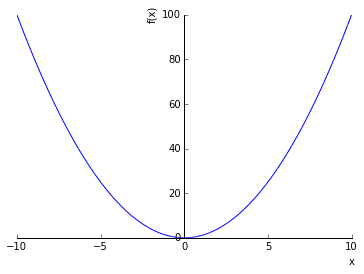
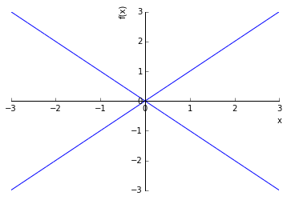

sympy_sample¶
In [1]:
import sympy
from sympy import (
init_printing,
# よく使いそうなものはImport
Symbol, symbols,
Abs,
Rational,
simplify, expand, factor,
limit, Limit,
diff, Derivative, dsolve,
integrate, Integral,
ln, log, expand_log,
sqrt, root, exp,
cos, sin, tan,
acos, asin, atan,
cosh, sinh, tanh,
acosh, asinh, atanh,
pi, oo, EulerGamma, Catalan, GoldenRatio,
I, E, # ImaginaryUnit, Exp(1)
sign,
Sum, Product, Min, Max,
Eq, solve, roots, Ne, # Equality, Unequality
gamma, loggamma, polygamma, uppergamma,
Function,
satisfiable,
Matrix
)
import sympy.abc
from sympy.plotting.plot import Plot
import matplotlib
import matplotlib.pyplot as plt
%matplotlib inline
In [2]:
init_printing()
sympy.__version__
Out[2]:
'0.7.6.1'
Symbol¶
In [3]:
x = Symbol('x')
y = Symbol('y')
x, y, symbols('a b c')
Out[3]:
$$\left ( x, \quad y, \quad \left ( a, \quad b, \quad c\right )\right )$$
In [4]:
type(x)
Out[4]:
sympy.core.symbol.Symbol
In [5]:
[a for a in dir(x) if not a.startswith('_')]
Out[5]:
['adjoint',
'apart',
'args',
'args_cnc',
'as_base_exp',
'as_coeff_Add',
'as_coeff_Mul',
'as_coeff_add',
'as_coeff_exponent',
'as_coeff_mul',
'as_coefficient',
'as_coefficients_dict',
'as_content_primitive',
'as_dummy',
'as_expr',
'as_independent',
'as_leading_term',
'as_numer_denom',
'as_ordered_factors',
'as_ordered_terms',
'as_poly',
'as_powers_dict',
'as_real_imag',
'as_terms',
'assumptions0',
'atoms',
'cancel',
'canonical_variables',
'class_key',
'coeff',
'collect',
'combsimp',
'compare',
'compute_leading_term',
'conjugate',
'copy',
'could_extract_minus_sign',
'count',
'count_ops',
'default_assumptions',
'diff',
'doit',
'dummy_eq',
'equals',
'evalf',
'expand',
'extract_additively',
'extract_branch_factor',
'extract_multiplicatively',
'factor',
'find',
'free_symbols',
'fromiter',
'func',
'getO',
'getn',
'has',
'integrate',
'invert',
'is_Add',
'is_AlgebraicNumber',
'is_Atom',
'is_Boolean',
'is_Derivative',
'is_Dummy',
'is_Equality',
'is_Float',
'is_Function',
'is_Integer',
'is_Matrix',
'is_Mul',
'is_Not',
'is_Number',
'is_NumberSymbol',
'is_Order',
'is_Piecewise',
'is_Poly',
'is_Pow',
'is_Rational',
'is_Relational',
'is_Symbol',
'is_Vector',
'is_Wild',
'is_algebraic',
'is_algebraic_expr',
'is_antihermitian',
'is_bounded',
'is_commutative',
'is_comparable',
'is_complex',
'is_composite',
'is_constant',
'is_even',
'is_finite',
'is_hermitian',
'is_hypergeometric',
'is_imaginary',
'is_infinite',
'is_infinitesimal',
'is_integer',
'is_irrational',
'is_negative',
'is_noninteger',
'is_nonnegative',
'is_nonpositive',
'is_nonzero',
'is_number',
'is_odd',
'is_polar',
'is_polynomial',
'is_positive',
'is_prime',
'is_rational',
'is_rational_function',
'is_real',
'is_transcendental',
'is_unbounded',
'is_zero',
'iter_basic_args',
'leadterm',
'limit',
'lseries',
'match',
'matches',
'n',
'name',
'normal',
'nseries',
'nsimplify',
'powsimp',
'primitive',
'radsimp',
'ratsimp',
'rcall',
'refine',
'removeO',
'replace',
'rewrite',
'round',
'separate',
'series',
'simplify',
'sort_key',
'subs',
'taylor_term',
'together',
'transpose',
'trigsimp',
'xreplace']
In [6]:
abc_symblos = [sympy.abc.a, sympy.abc.b, sympy.abc.c, sympy.abc.x, sympy.abc.y, sympy.abc.z, sympy.abc.X, sympy.abc.Y, sympy.abc.Z]
abc_symblos
Out[6]:
$$\left [ a, \quad b, \quad c, \quad x, \quad y, \quad z, \quad X, \quad Y, \quad Z\right ]$$
In [7]:
[type(s) for s in abc_symblos]
Out[7]:
[sympy.core.symbol.Symbol,
sympy.core.symbol.Symbol,
sympy.core.symbol.Symbol,
sympy.core.symbol.Symbol,
sympy.core.symbol.Symbol,
sympy.core.symbol.Symbol,
sympy.core.symbol.Symbol,
sympy.core.symbol.Symbol,
sympy.core.symbol.Symbol]
In [8]:
onechar_symbols = ''.join([a for a in dir(sympy.abc) if len(a) == 1])
onechar_symbols
Out[8]:
'ABCDEFGHIJKLMNOPQRSTUVWXYZabcdefghijklmnopqrstuvwxyz'
In [9]:
import string
onechar_symbols == string.ascii_uppercase + string.ascii_lowercase
Out[9]:
True
In [10]:
sympy.var('a:c')
a, b, c
Out[10]:
$$\left ( a, \quad b, \quad c\right )$$
In [11]:
a_list = sympy.var('a0:5')
a_list
Out[11]:
$$\left ( a_{0}, \quad a_{1}, \quad a_{2}, \quad a_{3}, \quad a_{4}\right )$$
In [12]:
a0
Out[12]:
$$a_{0}$$
In [13]:
b_list = symbols('b0:5')
b_list
Out[13]:
$$\left ( b_{0}, \quad b_{1}, \quad b_{2}, \quad b_{3}, \quad b_{4}\right )$$
In [14]:
try:
b0
except NameError as e:
print(e)
name 'b0' is not defined
In [15]:
symbols('c1:5')
Out[15]:
$$\left ( c_{1}, \quad c_{2}, \quad c_{3}, \quad c_{4}\right )$$
In [16]:
symbols('d0:5:2')
Out[16]:
$$\left ( d_{00}, \quad d_{01}, \quad d_{10}, \quad d_{11}, \quad d_{20}, \quad d_{21}, \quad d_{30}, \quad d_{31}, \quad d_{40}, \quad d_{41}\right )$$
expression¶
単項式¶
In [17]:
+x
Out[17]:
$$x$$
In [18]:
-x
Out[18]:
$$- x$$
In [19]:
Abs(1), Abs(-1)
Out[19]:
$$\left ( 1, \quad 1\right )$$
In [20]:
Abs(x)
# RuntimeError: latex program is not installed
Out[20]:
$$\left\lvert{x}\right\rvert$$
複素数¶
In [21]:
x+1j
Out[21]:
$$x + 1.0 i$$
In [22]:
x + 1j*y
Out[22]:
$$x + 1.0 i y$$
In [23]:
1+3.1*I
Out[23]:
$$1 + 3.1 i$$
In [24]:
type(I)
Out[24]:
sympy.core.numbers.ImaginaryUnit
多項式¶
In [25]:
x + y
Out[25]:
$$x + y$$
In [26]:
x - y
Out[26]:
$$x - y$$
In [27]:
x * y
Out[27]:
$$x y$$
分数¶
In [28]:
1 / 3
Out[28]:
$$0.3333333333333333$$
In [29]:
Rational(1, 3)
Out[29]:
$$\frac{1}{3}$$
In [30]:
x / y
Out[30]:
$$\frac{x}{y}$$
累乗¶
In [31]:
x ** 2
Out[31]:
$$x^{2}$$
In [32]:
x ** y
Out[32]:
$$x^{y}$$
In [33]:
x ** (y + 1)
Out[33]:
$$x^{y + 1}$$
In [34]:
expr_exp = (x + y) ** 2
expr_exp
Out[34]:
$$\left(x + y\right)^{2}$$
展開と因数分解¶
In [35]:
expr_exp.expand(), expand(expr_exp)
Out[35]:
$$\left ( x^{2} + 2 x y + y^{2}, \quad x^{2} + 2 x y + y^{2}\right )$$
In [36]:
expanded = expr_exp.expand()
expanded.factor(), factor(expanded)
Out[36]:
$$\left ( \left(x + y\right)^{2}, \quad \left(x + y\right)^{2}\right )$$
In [37]:
(x ** 2 + 2 * x + 2).factor()
Out[37]:
$$x^{2} + 2 x + 2$$
簡略化¶
In [38]:
complexity_expr = (x + x * y) / x
complexity_expr
Out[38]:
$$\frac{1}{x} \left(x y + x\right)$$
In [39]:
complexity_expr.simplify(), simplify(complexity_expr)
Out[39]:
$$\left ( y + 1, \quad y + 1\right )$$
自然対数¶
In [40]:
ln(x), log(x)
Out[40]:
$$\left ( \log{\left (x \right )}, \quad \log{\left (x \right )}\right )$$
In [41]:
ln(x, y)
Out[41]:
$$\frac{\log{\left (x \right )}}{\log{\left (y \right )}}$$
In [42]:
ln(x) + ln(y)
Out[42]:
$$\log{\left (x \right )} + \log{\left (y \right )}$$
In [43]:
ln(x + y)
Out[43]:
$$\log{\left (x + y \right )}$$
In [44]:
expand_log(log(x + y), force=True)
Out[44]:
$$\log{\left (x + y \right )}$$
In [45]:
ln(x ** 2)
Out[45]:
$$\log{\left (x^{2} \right )}$$
In [46]:
expand_log(log(x ** 2), force=True)
Out[46]:
$$2 \log{\left (x \right )}$$
In [ ]:
In [47]:
import sympy.mpmath
sympy.mpmath.log(2)
import math
sympy.asinh
Out[47]:
asinh
無限と極限¶
In [50]:
oo, -oo
Out[50]:
$$\left ( \infty, \quad -\infty\right )$$
In [51]:
expr_ex.limit(x, oo), limit(expr_ex, x, oo)
Out[51]:
$$\left ( \infty, \quad \infty\right )$$
In [52]:
limit(expr_ex, x, 0), limit(expr_ex, x, -oo)
Out[52]:
$$\left ( 0, \quad \infty\right )$$
In [53]:
Limit(expr_ex, x, 0), Limit(expr_ex, x, 0, '-')
Out[53]:
$$\left ( \lim_{x \to 0^+} x^{2}, \quad \lim_{x \to 0^-} x^{2}\right )$$
微分¶
In [54]:
expr_ex.diff(), diff(expr_ex)
Out[54]:
$$\left ( 2 x, \quad 2 x\right )$$
In [55]:
Derivative(expr_ex)
Out[55]:
$$\frac{d}{d x} x^{2}$$
積分¶
In [56]:
expr_ex.integrate(), integrate(expr_ex)
Out[56]:
$$\left ( \frac{x^{3}}{3}, \quad \frac{x^{3}}{3}\right )$$
In [57]:
Integral(expr_ex, (x, -oo, oo))
Out[57]:
$$\int_{-\infty}^{\infty} x^{2}\, dx$$
多変数¶
In [58]:
expr_ex2 = x ** 3 + y ** 3
expr_ex2
Out[58]:
$$x^{3} + y^{3}$$
In [59]:
expr_ex2.subs(x, 2), expr_ex2.subs(y, 2), expr_ex2.subs([(x, 2), (y, 2)])
Out[59]:
$$\left ( y^{3} + 8, \quad x^{3} + 8, \quad 16\right )$$
In [60]:
expr_ex2.diff(x), expr_ex2.diff(y), expr_ex2.diff(x, y)
Out[60]:
$$\left ( 3 x^{2}, \quad 3 y^{2}, \quad 0\right )$$
In [61]:
expr_ex2.diff(y, y), expr_ex2.diff(y, y, y), expr_ex2.diff(y, 3)
Out[61]:
$$\left ( 6 y, \quad 6, \quad 6\right )$$
In [62]:
expr_ex2.integrate(x), expr_ex2.integrate(y), expr_ex2.integrate(x, y)
Out[62]:
$$\left ( \frac{x^{4}}{4} + x y^{3}, \quad x^{3} y + \frac{y^{4}}{4}, \quad \frac{x^{4} y}{4} + \frac{x y^{4}}{4}\right )$$
In [63]:
integrate(expr_ex2, (x, 0, 1)), integrate(expr_ex2, (x, 0, oo))
Out[63]:
$$\left ( y^{3} + \frac{1}{4}, \quad \infty \operatorname{sign}{\left (y^{3} \right )} + \infty\right )$$
In [64]:
Integral(expr_ex2, (x, 0, 1)), Integral(expr_ex2, (x, 0, oo))
Out[64]:
$$\left ( \int_{0}^{1} x^{3} + y^{3}\, dx, \quad \int_{0}^{\infty} x^{3} + y^{3}\, dx\right )$$
累乗根¶
In [65]:
sqrt(x), root(x, 3), root(x, -2), root(x, -3)
Out[65]:
$$\left ( \sqrt{x}, \quad \sqrt[3]{x}, \quad \frac{1}{\sqrt{x}}, \quad \frac{1}{\sqrt[3]{x}}\right )$$
円周率¶
In [66]:
pi
Out[66]:
$$\pi$$
In [67]:
type(pi)
Out[67]:
sympy.core.numbers.Pi
In [68]:
pi.evalf()
Out[68]:
$$3.14159265358979$$
三角関数¶
In [69]:
cos(x), sin(x), tan(x), cos(pi), sin(pi), tan(pi)
Out[69]:
$$\left ( \cos{\left (x \right )}, \quad \sin{\left (x \right )}, \quad \tan{\left (x \right )}, \quad -1, \quad 0, \quad 0\right )$$
In [70]:
cos(x) ** 2 + sin(x) ** 2
Out[70]:
$$\sin^{2}{\left (x \right )} + \cos^{2}{\left (x \right )}$$
In [71]:
# only tan
tan(x).rewrite(sin), tan(x).rewrite(cos)
Out[71]:
$$\left ( \frac{2 \sin^{2}{\left (x \right )}}{\sin{\left (2 x \right )}}, \quad \frac{\sin{\left (x \right )}}{\cos{\left (x \right )}}\right )$$
In [72]:
acos(x), asin(x), atan(x)
Out[72]:
$$\left ( \operatorname{acos}{\left (x \right )}, \quad \operatorname{asin}{\left (x \right )}, \quad \operatorname{atan}{\left (x \right )}\right )$$
In [73]:
cosh(x), sinh(x), tanh(x)
Out[73]:
$$\left ( \cosh{\left (x \right )}, \quad \sinh{\left (x \right )}, \quad \tanh{\left (x \right )}\right )$$
In [74]:
acosh(x), asinh(x), atanh(x)
Out[74]:
$$\left ( \operatorname{acosh}{\left (x \right )}, \quad \operatorname{asinh}{\left (x \right )}, \quad \operatorname{atanh}{\left (x \right )}\right )$$
自然対数の底¶
In [75]:
exp(x)
Out[75]:
$$e^{x}$$
In [76]:
type(exp)
Out[76]:
sympy.core.function.FunctionClass
In [77]:
E, exp(1), E.evalf()
Out[77]:
$$\left ( e, \quad e, \quad 2.71828182845905\right )$$
In [78]:
type(E), type(exp(1)), type(exp(2))
Out[78]:
(sympy.core.numbers.Exp1, sympy.core.numbers.Exp1, exp)
符号関数¶
In [79]:
sign(-2), sign(2), sign(x)
Out[79]:
$$\left ( -1, \quad 1, \quad \operatorname{sign}{\left (x \right )}\right )$$
テイラー展開¶
In [80]:
cos(x).series(x)
Out[80]:
$$1 - \frac{x^{2}}{2} + \frac{x^{4}}{24} + \mathcal{O}\left(x^{6}\right)$$
ランダウの記号¶
In [81]:
sympy.O(x ** 2)
Out[81]:
$$\mathcal{O}\left(x^{2}\right)$$
In [82]:
# ??
sympy.O(x ** 2).getn()
Out[82]:
$$2$$
In [83]:
(x + sympy.O(x ** 2)).getO()
Out[83]:
$$\mathcal{O}\left(x^{2}\right)$$
In [84]:
(x**2 - 1).invert(2*x - 1)
Out[84]:
$$- \frac{4}{3}$$
In [85]:
(x - 1).invert(x + 1)
Out[85]:
$$- \frac{1}{2}$$
In [86]:
# sympy.plotting.plot(x**2 - 1, 2*x - 1, (x, -5, 5))
Sum¶
In [87]:
Sum(x, (x, 1, y))
Out[87]:
$$\sum_{x=1}^{y} x$$
In [88]:
Sum(x, (x, 1, 10)), Sum(x, (x, 1, 10)).doit()
Out[88]:
$$\left ( \sum_{x=1}^{10} x, \quad 55\right )$$
Product¶
In [89]:
Product(x, (x, 1, y))
Out[89]:
$$\prod_{x=1}^{y} x$$
In [90]:
Product(x, (x, 1, 10)), Product(x, (x, 1, 10)).doit()
Out[90]:
$$\left ( \prod_{x=1}^{10} x, \quad 3628800\right )$$
Max/Min¶
In [91]:
Max(x, y), Min(x, y)
Out[91]:
$$\left ( \max\left(x, y\right), \quad \min\left(x, y\right)\right )$$
方程式¶
In [92]:
equation = Eq(x ** 2 + 2 * x, 0)
equation
Out[92]:
$$x^{2} + 2 x = 0$$
In [93]:
solve(equation)
Out[93]:
$$\left [ -2, \quad 0\right ]$$
In [94]:
# expr = 0 の方程式
solve(x ** 2 + 2 * x)
Out[94]:
$$\left [ -2, \quad 0\right ]$$
In [95]:
roots(x ** 2 + 2 * x)
Out[95]:
$$\left \{ -2 : 1, \quad 0 : 1\right \}$$
In [96]:
expr_ex3 = x ** 2 + 2 * x + 1
solve(expr_ex3), roots(expr_ex3)
Out[96]:
$$\left ( \left [ -1\right ], \quad \left \{ -1 : 2\right \}\right )$$
不等式¶
In [97]:
type(1 > x)
Out[97]:
sympy.core.relational.StrictLessThan
In [98]:
1 > x, 1 >= x, 1 < x, 1 <= x, Ne(1, x)
Out[98]:
$$\left ( x < 1, \quad x \leq 1, \quad x > 1, \quad x \geq 1, \quad 1 \neq x\right )$$
In [99]:
## ??
solve(1 > x)
Out[99]:
$$\Im{x} = 0 \wedge -\infty < \Re{x} \wedge \Re{x} < 1$$
連立方程式（Ex:鶴亀）¶
In [100]:
solve([x + y - 3, 2 * x + 4 * y - 8], [x, y])
Out[100]:
$$\left \{ x : 2, \quad y : 1\right \}$$
名前付き¶
In [101]:
EulerGamma, Catalan, GoldenRatio
Out[101]:
$$\left ( \gamma, \quad Catalan, \quad \phi\right )$$
ガンマ関数¶
In [102]:
gamma(x), loggamma(x), polygamma(x, y), uppergamma(x, y)
Out[102]:
$$\left ( \Gamma{\left(x \right)}, \quad \operatorname{loggamma}{\left (x \right )}, \quad \operatorname{polygamma}{\left (x,y \right )}, \quad \Gamma\left(x, y\right)\right )$$
関数定義？¶
In [104]:
f_ = Function('f')
f_(x), f_(2)
Out[104]:
$$\left ( f{\left (x \right )}, \quad f{\left (2 \right )}\right )$$
In [105]:
f2_ = symbols('f2', cls=Function)
f2_(x), f2_(2)
Out[105]:
$$\left ( \operatorname{f_{2}}{\left (x \right )}, \quad \operatorname{f_{2}}{\left (2 \right )}\right )$$
In [106]:
f_(x).limit(x, oo), f_(x).limit(x, -oo)
Out[106]:
$$\left ( f{\left (\infty \right )}, \quad f{\left (-\infty \right )}\right )$$
In [107]:
f_(x).diff(x)
Out[107]:
$$\frac{d}{d x} f{\left (x \right )}$$
In [108]:
f_(x).integrate(x), f_(x).integrate((x, 1, 10))
Out[108]:
$$\left ( \int f{\left (x \right )}\, dx, \quad \int_{1}^{10} f{\left (x \right )}\, dx\right )$$
In [109]:
g_ = Function('g')(x)
g_
Out[109]:
$$g{\left (x \right )}$$
In [110]:
g_.limit(x, oo), g_.limit(x, -oo)
Out[110]:
$$\left ( g{\left (\infty \right )}, \quad g{\left (-\infty \right )}\right )$$
In [111]:
g_.diff(x)
Out[111]:
$$\frac{d}{d x} g{\left (x \right )}$$
In [112]:
g_.integrate(x), g_.integrate((x, 1, 10))
Out[112]:
$$\left ( \int g{\left (x \right )}\, dx, \quad \int_{1}^{10} g{\left (x \right )}\, dx\right )$$
微分方程式¶
In [113]:
f1 = Function('f')(x)
f2 = Derivative(f1) + f1
f2
Out[113]:
$$f{\left (x \right )} + \frac{d}{d x} f{\left (x \right )}$$
In [114]:
dsolve(f2, f1)
Out[114]:
$$f{\left (x \right )} = C_{1} e^{- x}$$
vectorize¶
In [115]:
## http://docs.sympy.org/dev/modules/core.html#vectorize
その他関数¶
In [116]:
sympy.factorial(x)
Out[116]:
$$x!$$
In [117]:
comb = sympy.binomial(x, y)
comb
Out[117]:
$${\binom{x}{y}}$$
In [118]:
type(comb)
Out[118]:
binomial
In [119]:
sympy.binomial(4, 2)
Out[119]:
$$6$$
論理式¶
In [120]:
x | y
Out[120]:
$$x \vee y$$
In [121]:
x & y
Out[121]:
$$x \wedge y$$
In [122]:
x ^ y
Out[122]:
$$x \veebar y$$
In [123]:
~ x
Out[123]:
$$\neg x$$
In [124]:
(x | y).subs({x: True}), (x | y).subs({x: False}), (x & y).subs({x: True}), (x & y).subs({x: False})
Out[124]:
$$\left ( \mathrm{True}, \quad y, \quad y, \quad \mathrm{False}\right )$$
In [125]:
satisfiable(x | y), satisfiable(x & y), satisfiable(x ^ y), satisfiable(x), satisfiable(~ x), satisfiable(True)
Out[125]:
({y: True, x: True},
{y: True, x: True},
{y: False, x: True},
{x: True},
{x: False},
{True: True})
In [126]:
import sympy.logic.boolalg
type(sympy.Nor)
sympy.Nor(x, y), sympy.Nand(x, y)
Out[126]:
$$\left ( \neg (x \vee y), \quad \neg (x \wedge y)\right )$$
In [127]:
# if then else
sympy.ITE(x, True, False)
Out[127]:
$$ITE(x, True, False)$$
行列¶
行列定義と転置¶
In [128]:
mat = Matrix([
[x, 1, 2],
[3, y, 5],
[6, 7, 8]])
mat, mat.T
# RuntimeError: latex program is not installed
Out[128]:
$$\left ( \left[\begin{matrix}x & 1 & 2\\3 & y & 5\\6 & 7 & 8\end{matrix}\right], \quad \left[\begin{matrix}x & 3 & 6\\1 & y & 7\\2 & 5 & 8\end{matrix}\right]\right )$$
In [129]:
vec = Matrix([x, y, 2])
vec, vec.T
Out[129]:
$$\left ( \left[\begin{matrix}x\\y\\2\end{matrix}\right], \quad \left[\begin{matrix}x & y & 2\end{matrix}\right]\right )$$
In [130]:
Matrix(2, 3, [1, 2, 3, 4, 5, 6]), Matrix(2, 3, range(6))
Out[130]:
$$\left ( \left[\begin{matrix}1 & 2 & 3\\4 & 5 & 6\end{matrix}\right], \quad \left[\begin{matrix}0 & 1 & 2\\3 & 4 & 5\end{matrix}\right]\right )$$
In [131]:
Matrix(3, 4, lambda i, j: i + j)
Out[131]:
$$\left[\begin{matrix}0 & 1 & 2 & 3\\1 & 2 & 3 & 4\\2 & 3 & 4 & 5\end{matrix}\right]$$
単位行列¶
In [132]:
sympy.eye(3)
Out[132]:
$$\left[\begin{matrix}1 & 0 & 0\\0 & 1 & 0\\0 & 0 & 1\end{matrix}\right]$$
すべての要素が1¶
In [133]:
sympy.ones(3), sympy.ones(3, 4)
Out[133]:
$$\left ( \left[\begin{matrix}1 & 1 & 1\\1 & 1 & 1\\1 & 1 & 1\end{matrix}\right], \quad \left[\begin{matrix}1 & 1 & 1 & 1\\1 & 1 & 1 & 1\\1 & 1 & 1 & 1\end{matrix}\right]\right )$$
ゼロ行列¶
In [134]:
sympy.zeros(3), sympy.zeros(3, 4)
Out[134]:
$$\left ( \left[\begin{matrix}0 & 0 & 0\\0 & 0 & 0\\0 & 0 & 0\end{matrix}\right], \quad \left[\begin{matrix}0 & 0 & 0 & 0\\0 & 0 & 0 & 0\\0 & 0 & 0 & 0\end{matrix}\right]\right )$$
要素の参照¶
In [135]:
mat[1], mat[4], mat[7]
Out[135]:
$$\left ( 1, \quad y, \quad 7\right )$$
In [136]:
mat[0, 1], mat[1, 1], mat[2, 1]
Out[136]:
$$\left ( 1, \quad y, \quad 7\right )$$
In [137]:
mat[0:2, 0:3]
Out[137]:
$$\left[\begin{matrix}x & 1 & 2\\3 & y & 5\end{matrix}\right]$$
In [138]:
mat[:, 0:2], mat[0:2, :]
Out[138]:
$$\left ( \left[\begin{matrix}x & 1\\3 & y\\6 & 7\end{matrix}\right], \quad \left[\begin{matrix}x & 1 & 2\\3 & y & 5\end{matrix}\right]\right )$$
In [139]:
vec[0], vec[1], vec[2]
Out[139]:
$$\left ( x, \quad y, \quad 2\right )$$
In [140]:
mat2 = mat[:, :]
mat2[0, 0] = mat2[2, 2] = 100
mat2, mat
Out[140]:
$$\left ( \left[\begin{matrix}100 & 1 & 2\\3 & y & 5\\6 & 7 & 100\end{matrix}\right], \quad \left[\begin{matrix}x & 1 & 2\\3 & y & 5\\6 & 7 & 8\end{matrix}\right]\right )$$
In [141]:
mat3 = mat2
mat3[0, 0] = mat3[2, 2] = 10
mat3, mat2
Out[141]:
$$\left ( \left[\begin{matrix}10 & 1 & 2\\3 & y & 5\\6 & 7 & 10\end{matrix}\right], \quad \left[\begin{matrix}10 & 1 & 2\\3 & y & 5\\6 & 7 & 10\end{matrix}\right]\right )$$
代入¶
In [142]:
mat.subs(x, 50)
Out[142]:
$$\left[\begin{matrix}50 & 1 & 2\\3 & y & 5\\6 & 7 & 8\end{matrix}\right]$$
演算¶
In [143]:
mat + mat
Out[143]:
$$\left[\begin{matrix}2 x & 2 & 4\\6 & 2 y & 10\\12 & 14 & 16\end{matrix}\right]$$
In [144]:
# mat + 2
In [145]:
mat - mat
Out[145]:
$$\left[\begin{matrix}0 & 0 & 0\\0 & 0 & 0\\0 & 0 & 0\end{matrix}\right]$$
In [146]:
mat * mat
Out[146]:
$$\left[\begin{matrix}x^{2} + 15 & x + y + 14 & 2 x + 21\\3 x + 3 y + 30 & y^{2} + 38 & 5 y + 46\\6 x + 69 & 7 y + 62 & 111\end{matrix}\right]$$
In [147]:
3 * mat
Out[147]:
$$\left[\begin{matrix}3 x & 3 & 6\\9 & 3 y & 15\\18 & 21 & 24\end{matrix}\right]$$
In [148]:
mat / mat
Out[148]:
$$\left[\begin{matrix}x & 1 & 2\\3 & y & 5\\6 & 7 & 8\end{matrix}\right] \left(\left[\begin{matrix}x & 1 & 2\\3 & y & 5\\6 & 7 & 8\end{matrix}\right]\right)^{-1}$$
In [149]:
mat / 3
Out[149]:
$$\left[\begin{matrix}\frac{x}{3} & \frac{1}{3} & \frac{2}{3}\\1 & \frac{y}{3} & \frac{5}{3}\\2 & \frac{7}{3} & \frac{8}{3}\end{matrix}\right]$$
内積¶
In [150]:
mat.dot(vec)
Out[150]:
$$\left [ x^{2} + y + 4, \quad 3 x + y^{2} + 10, \quad 6 x + 7 y + 16\right ]$$
逆行列¶
In [151]:
mat.inv()
Out[151]:
$$\left[\begin{matrix}- \frac{\left(x y - 3\right) \left(- \frac{5 - \frac{6}{x}}{x \left(y - \frac{3}{x}\right)} + \frac{2}{x}\right) \left(\frac{21 - \frac{18}{x}}{x \left(y - \frac{3}{x}\right)} - \frac{6}{x}\right)}{8 x y - 35 x - 12 y + 48} + \frac{1}{x} + \frac{3}{x^{2} \left(y - \frac{3}{x}\right)} & \frac{\left(7 - \frac{6}{x}\right) \left(x y - 3\right) \left(- \frac{5 - \frac{6}{x}}{x \left(y - \frac{3}{x}\right)} + \frac{2}{x}\right)}{\left(y - \frac{3}{x}\right) \left(8 x y - 35 x - 12 y + 48\right)} - \frac{1}{x \left(y - \frac{3}{x}\right)} & - \frac{\left(x y - 3\right) \left(- \frac{5 - \frac{6}{x}}{x \left(y - \frac{3}{x}\right)} + \frac{2}{x}\right)}{8 x y - 35 x - 12 y + 48}\\- \frac{\left(5 - \frac{6}{x}\right) \left(x y - 3\right) \left(\frac{21 - \frac{18}{x}}{x \left(y - \frac{3}{x}\right)} - \frac{6}{x}\right)}{\left(y - \frac{3}{x}\right) \left(8 x y - 35 x - 12 y + 48\right)} - \frac{3}{x \left(y - \frac{3}{x}\right)} & \frac{\left(5 - \frac{6}{x}\right) \left(7 - \frac{6}{x}\right) \left(x y - 3\right)}{\left(y - \frac{3}{x}\right)^{2} \left(8 x y - 35 x - 12 y + 48\right)} + \frac{1}{y - \frac{3}{x}} & - \frac{\left(5 - \frac{6}{x}\right) \left(x y - 3\right)}{\left(y - \frac{3}{x}\right) \left(8 x y - 35 x - 12 y + 48\right)}\\\frac{\left(x y - 3\right) \left(\frac{21 - \frac{18}{x}}{x \left(y - \frac{3}{x}\right)} - \frac{6}{x}\right)}{8 x y - 35 x - 12 y + 48} & - \frac{\left(7 - \frac{6}{x}\right) \left(x y - 3\right)}{\left(y - \frac{3}{x}\right) \left(8 x y - 35 x - 12 y + 48\right)} & \frac{x y - 3}{8 x y - 35 x - 12 y + 48}\end{matrix}\right]$$
行列式¶
In [152]:
mat.det()
Out[152]:
$$8 x y - 35 x - 12 y + 48$$
In [153]:
mat_a = Matrix([
[2, 3, 5],
[3, 6, 2],
[8, 3, 6]])
mat_x = Matrix(3, 1, [3,7,5])
mat_b = mat_a * mat_x
mat_a.LUsolve(mat_b)
Out[153]:
$$\left[\begin{matrix}3\\7\\5\end{matrix}\right]$$
グラフ¶
In [154]:
sympy.plotting.plot(x ** 2)

Out[154]:
<sympy.plotting.plot.Plot at 0x10832a550>
In [155]:
sympy.plotting.plot(x ** 2, (x, -3, 5))

Out[155]:
<sympy.plotting.plot.Plot at 0x1083e2f60>
In [156]:
sympy.plotting.plot(-x, x, (x, -3, 3))

Out[156]:
<sympy.plotting.plot.Plot at 0x10882eb00>
In [157]:
sympy.plotting.plot((-x, (x, -3, 0)), (x, (x, 0, 3)))

Out[157]:
<sympy.plotting.plot.Plot at 0x10851dd30>